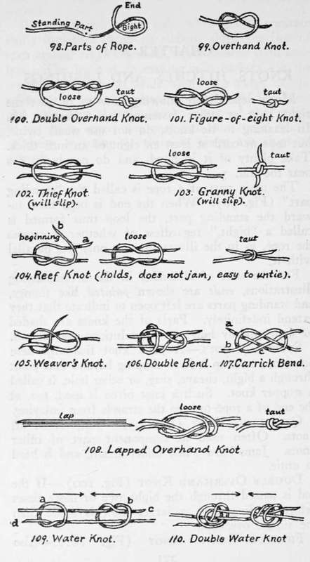

Chapter XVI. Knots, Hitches, And Lashings
Description
This section is from the book "Camping And Woodcraft", by Horace Kephart. Also available from Amazon: Camping and Woodcraft.
Chapter XVI. Knots, Hitches, And Lashings
Much depends on knowing how to tie just the right knot or other fastening for a certain job. In learning to tie knots, do not use small twine, but rope or cord at least an eight of an inch thick. Take plenty of it in hand, and do not begin too near the end.
The main part of a rope is called the "standing part" (Fig. 98). When the end is bent back toward the standing part, the loop thus formed is called a "bight," regardless of whether it crosses the rope, as in the illustration, or only lies parallel with it.
For the sake of clearness, in the accompanying illustrations, ends are shown pointed like thongs, and standing parts are left open to indicate that they extend indefinitely. Parts of the knots are shaded to show plainly how the convolutions are formed.
Stopper Knots
A plain knot tied anywhere on a rope to keep it from slipping beyond that point through a bight, sheave, ring, or other hole, is called a stopper knot. Such a knot often is used, too, at the end of a rope to keep the strands from unlaying.
Overhand Knot (Fig. 99)
Simplest of all knots. Often used as component part of other knots. Jams hard when under strain, and is hard to untie.
Double Overhand Knot (Fig. 100)
If the end is passed through the bight two or more times before hauling taut, a larger knot is made than the simple overhand.
Figure-Of-Eight Knot (Fig. 101)
Also called Flemish, or German knot. Used for the same purposes as the overhand knot, but more elegant and easier to untie. (See also p. 319).
Knots For Joining Ropes, Etc
First are given illustrations of two knots that never are to be used, because both are treacherous. The thief knot (Fig. 102), with ends pointing in opposite directions, is sure to slip. It is a bungled weaver's knot (compare Fig. 105).
The granny or lubber's knot (Fig 103) is formed by passing the end a in Fig. 104 over instead of under the end b, and then bending b down under it. The result is that the loops cross over and under on opposite sides, instead of the same way on both sides. Such a knot, when drawn taut, has its ends sticking out and away from the standing part, and it is very likely to slip.
Reef Knot (Fig. 104)
Known also as square or true knot. Will not slip, unless used in tying a small cord or rope to a thicker one. So long as the two ends are of equal diameter this knot may be relied upon. It has the advantage of being easy to untie. To make it, cross the two ends, a under b, turn a over and under b, bring the two ends up away from you, cross a under b, turn b under at and draw taut by pulling the ends.
To untie, if the rope or cord is stiff enough, seize the standing part on each side, just outside the knot, push the hands together, and the loops slip over one another. If the material is limber, take one end in left hand and the standing part of the same end in the other, pull hard on both, and the knot becomes dislocated so that it is easily undone.
Surgeon's Knot
This is the same as a reef knot except that, in making it, the end a is turned twice around the standing part of b before proceed* ing with the loop, just as in the double overhand knot (Fig. 100). It is used by surgeons in drawing tissue together, to prevent slipping of the first turn of the knot (see Fig. 193).
Weaver's Knot (Fig. 105)
Often called thumb knot, or, by sailors, becket bend or hitch, single or common bend. Almost the only knot by which two ropes of greatly differing sizes can be joined firmly together; also the quickest and most secure of all knots for joining threads or twine. Weavers tie it so deftly that the eye cannot follow their movements. To tie it as they do: (1) Cross the ends of two pieces of thread, the right one underneath the left, and hold them with thumb and finger where they cross; (2) with the other hand bring the standing part of right thread up over left thumb, down around its own end (which is projecting to the left), back in between the two ends, on top of the cross, and hold it there with left thumb; (3) slip the loop that is around thumb forward over end of left thread (which is projecting forward in line with thumb) ; (4) draw taut by drawing on both standing parts. The knack is in the third operation, which is done by raising knuckle of left thumb so that loop will slide forward, at the same time pushing end of left thread under it with right thumb (the two thumbs pointing straight toward each other). This can only be done with thread or soft twine.
This knot never slips, when properly made, but when ropes or cords of different thicknesses are joined with it, make the eye on the stouter, as shown in the figure. The weaver's knot is used in making nets, and has a great variety of other applications. When tied to a loop already made, such as the clew of a sail or a loop on a gut leader, the end is passed up through the loop, round the back of it, and under its own part.
Double Bend (Fig. 106) Or Sheet Bend
Same as above, except that the end is passed twice around the back of the loop before putting it undei its own part. This gives it additional security when one line is thicker than the other. Often used by fishermen in bending a line on the loop of a gut leader.
Carrick Bend (Fig. 107)
Used for joining cow ropes together. Holds well, but is easily undone by pushing the loops inward toward each other. Lay the end of one rope a over the standing part b; put the end of another rope under the bight, over the other behind a, under the other at b, over at c, under its own part, out over the bight, and haul taut. Best of all knots for joining stiff ropes.
Lapped Overhand Knot (Fig. 108) Or Open-Hand Knot
A quick way of joining two lines or strands of gut together, and so used by fishermen to mend a broken cast when in a hurry, although it is not absolutely secure. Lay the two ends together and past each other about three inches; give these a turn over the right forefinger to form a loop; slip this off, and pass the two ends to the left through the loop and draw tight, snipping off the short end close to the knot. Rather clumsy, and more likely to break at the knot than elsewhere.
Continue to: